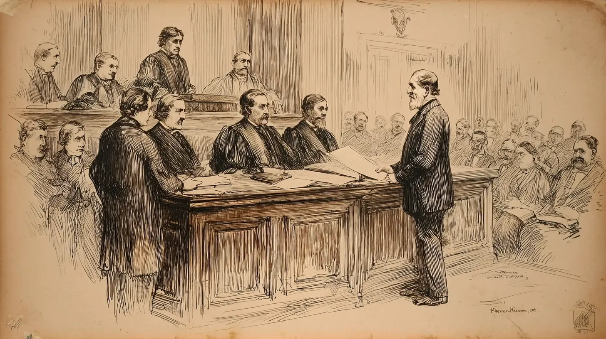

Mini-lecture
Side trip from Ch. 12 · Lecture 4 · Children’s Rights
Mary Ellen Wilson
The Child Who Changed America
1874 • New York City
Why you’re here: you opened this from the “The Mary Ellen Moment, 1874–1875” slide. The last slide takes you back to it.

Source: Historic photograph from 1874 (Public Domain)
Historic Photograph of Mary Ellen Wilson, 1874
This powerful image shows Mary Ellen following her rescue, revealing the visible wounds
and malnourishment that shocked the courtroom.
Image credit: Wikipedia: Mary Ellen Wilson
In a quiet New York courtroom on April 9, 1874, a small figure wrapped in a carriage blanket stood before Judge Abraham Lawrence. She had no proper clothes of her own. Her body bore the marks of years of brutal abuse—bruises, scissor wounds, and the unmistakable signs of malnutrition and neglect. When she spoke, her words would echo through history and fundamentally change how America viewed the rights of children.
"I saw a child brought in… at the sight of which men wept aloud, and I heard the story of little Mary Ellen told… that stirred the soul of a city and roused the conscience of a world that had forgotten, and as I looked, I knew I was where the first chapter of children's rights was being written."
This was Mary Ellen Wilson, and her case would become the catalyst for the world's first child protection movement—a revolution in how society understood its responsibility to protect its most vulnerable members.
America Before Child Protection
At the beginning of 1874, there were no legal means in the United States to save a child from abuse. The law recognized children as the property of their parents or guardians, and family privacy was held sacrosanct. Government interference in family matters was viewed with deep suspicion, even when children suffered terribly behind closed doors.
America Before Child Protection · continued
Paradoxically, while laws existed to protect animals from cruelty—the American Society for the Prevention of Cruelty to Animals (ASPCA) had been founded in 1866—no comparable protections existed for children. Parents could beat, starve, and neglect their children with impunity, so long as they did not kill them. Painful punishments were considered an everyday strategy for managing misbehaved offspring, with no legal consequences for the adults inflicting them.
The few child welfare institutions that existed focused on orphans or abandoned children, not those suffering abuse in their own homes. When neighbors heard the cries of children being beaten, when they witnessed neglect and cruelty, they had no legal recourse. The machinery of the state, designed to maintain order and protect property, had no mechanism to reach into a family's private domain to rescue a suffering child.
It was into this legal and cultural landscape that Mary Ellen Wilson was born, in the notorious Hell's Kitchen neighborhood of New York City in March 1864.
Mary Ellen's Story
Early Life and Loss
Mary Ellen was born to Frances Connor Wilson and Thomas Wilson, an Irish immigrant couple working at the St. Nicholas Hotel in Manhattan. Her father shucked oysters in the hotel kitchen; her mother worked as a laundress. They had married in April 1862, shortly after Thomas was drafted into the 69th New York, a regiment of the famous Irish Brigade.
The birth of Mary Ellen in early 1864 seemed to herald her family's decline. That same year, her father was killed in the brutal fighting at Cold Harbor, Virginia—one of the Civil War's bloodiest battles. Widowed with an infant daughter and a drastically reduced income, Frances Wilson struggled to make ends meet.
Mary Ellen’s Story · Early Life and Loss · continued
Unable to care for Mary Ellen while working, Frances boarded her daughter with a woman named Mary Score—a common practice at the time for working mothers. Frances visited regularly and made her payments faithfully, but as her economic situation deteriorated, she began missing visits and falling behind on the childcare fees. Eventually, Frances disappeared from her daughter's life entirely, never to see her again.
In July 1865, when Mary Ellen was barely two years old, Mary Score turned her over to the New York City Department of Charities. The little girl was sent to Blackwell's Island, where she joined a group of sick and hungry foundlings. Fully two-thirds of these children would die before reaching maturity, victims of the slum-bred diseases that ravaged 19th-century institutions.
Mary Ellen’s Story
The Connolly Home: A Childhood of Cruelty
On January 2, 1866, a couple named Thomas and Mary McCormack came to the Department of Charities with a story. Thomas claimed that Mary Ellen was one of three children he had fathered with another woman, children whose mother had turned them over to the city's care. The McCormacks, who had lost all three of their own children to poverty-bred diseases, were ready to take the child home.
There is no evidence that Thomas McCormack was in any way related to Mary Ellen Wilson. The Department of Charities asked for no proof of relationship, accepting only the reference of the family doctor. An indenture was filed requiring the McCormacks to report annually on the child's condition. There were no other requirements, and no one ever followed up.
Shortly after bringing Mary Ellen home, Thomas McCormack died. His widow then married Francis Connolly, and the family moved to an apartment on West 41st Street in Hell's Kitchen. It was here that Mary Ellen's nightmare truly began.
The Connolly Home · continued
For the next seven years, Mary Connolly subjected the child to systematic abuse and neglect of shocking cruelty:
- Daily beatings with a twisted rawhide whip that left black and blue marks covering her body
- Scissor wounds to her face and head, leaving permanent scars
- Severe malnutrition—the child appeared stunted and prematurely aged
- Forced labor—heavy household work far beyond her capacity
- Complete isolation—locked in the apartment, never allowed outside except at night to use the outdoor privy
- Emotional deprivation—never kissed, never held, never shown affection of any kind
- Inadequate clothing—barefoot even in winter, dressed in rags
The Connolly Home · continued
Mary Ellen slept on a piece of carpet stretched on the floor beneath a window, covered only by a thin quilt. She owned one tattered undergarment and had never had shoes or stockings. She did not know her age. She had no memory of kindness or love. She lived in terror, forbidden to speak to anyone, knowing that any transgression would result in another beating.
Neighbors heard her cries. They knew something was terribly wrong. But in 1874, there was nothing they could legally do. The child was Mary Connolly's property, to treat as she wished within her own home.
The Rescue
Etta Angell Wheeler: A Voice for the Voiceless
In the winter of 1873, one of the Connollys' former neighbors from their West 41st Street apartment approached Etta Angell Wheeler, a Methodist missionary who visited the impoverished residents of Hell's Kitchen tenements. A concerned neighbor asked Wheeler to check on Mary Ellen at the family's new address.
Etta Wheeler was a religious woman, a voluntary missionary worker for the Methodist St. Luke's Mission. She had seen poverty countless times in her work. But when she gained access to the Connolly apartment—under the pretext of seeking help for a chronically ill neighbor—what she witnessed was different. The ten-year-old girl appeared dirty and thin, dressed in threadbare clothing, with visible bruises and scars along her bare arms and legs. It was winter, and the child had no shoes.
The Rescue · continued
Wheeler was horrified, but she was also strategic. She knew that if the Connollys suspected intervention, they would simply move again. Over the next three months, Wheeler approached more than twenty charities seeking help. None had the legal authority to intervene in a family. She went to the police. They refused to investigate, citing the sanctity of family privacy.
Every door was closed. There was no law, no mechanism, no precedent for removing an abused child from her home.
The Rescue
Henry Bergh and the Legal Innovation
In desperation, Wheeler turned to Henry Bergh, the founder and president of the American Society for the Prevention of Cruelty to Animals. It was an unconventional choice, born of necessity. Bergh had successfully championed laws protecting animals from abuse. Perhaps he could find a legal avenue to protect a child.
What many don't know is that Bergh had refused child abuse cases for ten years, insisting they were outside his mandate. The press fury over his seeming indifference to children while championing animals had been intense and sustained. When Wheeler approached him with Mary Ellen's case, Bergh finally acted—but not as the legend suggests.
Henry Bergh and the Legal Innovation · continued
Contrary to popular myth, Bergh and his attorney Elbridge T. Gerry did not argue that Mary Ellen should be protected under animal cruelty statutes. Instead, they used creative legal thinking to find a mechanism that would work. Gerry filed a writ of de homine replegiando—an ancient common law writ used to "secure the release of a person from unlawful detention"—arguing that the child was being illegally held and could be brought before a judge.
Before filing, Bergh sent an ASPCA investigator to verify Wheeler's account. The investigator posed as a census worker to gain entrance to the Connolly home. His report confirmed everything Wheeler had described and more.
On April 9, 1874, armed with witness testimonies and documentation, Gerry presented the case to Judge Abraham Lawrence. The judge immediately issued the writ, ordering that Mary Ellen be brought under court protection. Later, when Bergh signed the charter creating the New York Society for the Prevention of Cruelty to Children, he did so as ASPCA president—letterhead and documents prove it. The connection between animal welfare and child protection was real, if more complex than legend suggests.
The Trial That Changed Everything

April 9-10, 1874: The Courtroom Drama
On April 9, 1874, police removed Mary Ellen from the Connolly home and brought her to the New York State Supreme Court. Because she had no adequate clothing of her own, the policemen wrapped her in a carriage blanket. The courtroom was packed with spectators and members of the press—Henry Bergh, recognizing the power of public opinion, had personally contacted journalists from The New York Times and other papers.
The Trial That Changed Everything · continued
A reporter described the scene: "She is a bright little girl, with features indicating unusual mental capacity, but with a care-worn, stunted, and prematurely old look… Her apparent condition of health, as well as her scanty wardrobe, indicated that no change of custody or condition could be much more worse."
Jacob Riis, the famous journalist and social reformer, was present. His words would echo through history: "I saw a child brought in… at the sight of which men wept aloud." Strong men, hardened by years of seeing poverty and vice in New York's streets, openly wept at the sight of Mary Ellen Wilson.
The Trial That Changed Everything
Mary Ellen's Testimony
When called to testify on April 10, 1874, ten-year-old Mary Ellen spoke in a clear, steady voice. Her words, preserved in court records and newspaper accounts, remain among the most powerful testimony ever delivered by a child in an American courtroom:
"My father and mother are both dead. I don't know how old I am. I have no recollection of a time when I did not live with the Connollys. Mamma has been in the habit of whipping and beating me almost every day. She used to whip me with a twisted whip—a rawhide. The whip always left a black and blue mark on my body. I have now the black and blue marks on my head which were made by Mamma and also a cut on the left side of my forehead which was made by a pair of scissors. She struck me with the scissors and cut me; I have no recollection of ever having been kissed by any one—have never been kissed by Mamma. I have never been taken on my mamma's lap and caressed or petted. I never dared to speak to anybody, because if I did I would get whipped… I do not know for what I was whipped—mamma never said anything to me when she whipped me. I do not want to go back to live with mamma, because she beats me so. I have no recollection ever being on the street in my life."
Mary Ellen’s Testimony · continued
The physical evidence corroborated every word. Mary Ellen's body was covered with bruises in various stages of healing. The scissor wounds on her face were visible to everyone in the courtroom. She was severely malnourished, her growth stunted by years of inadequate food. Her hands and feet showed signs of great exposure.
Neighbors testified, confirming they had heard the child's cries for years. They described seeing her barefoot in winter, watching her being beaten, hearing Mary Connolly's rage through thin tenement walls.
Mary Connolly herself testified, showing surprising spirit despite the gravity of the charges. When asked if she had an occupation beyond housekeeping, she replied, "Well, I sleep with the boss." As questioning continued, she became enraged, finally accusing the prosecutor of being "ignorant of the difficulties of bringing up and governing children." She admitted that contrary to regulations, in the six years she had custody of Mary Ellen, she had reported on the child's condition to the Department of Charities only twice.
The Trial That Changed Everything
The Verdict
On April 21, 1874, the jury delivered its verdict: Mary Connolly was convicted of felonious assault. It was the first felony-assault conviction using a child's own testimony in U.S. history—a landmark legal precedent that recognized children as credible witnesses to their own suffering.
Mary Connolly was sentenced to one year of hard labor in the penitentiary—the maximum sentence available under the law at that time. More importantly, Mary Ellen was made a ward of the court, removed permanently from the Connolly home.
The Verdict · continued
Initially, Mary Ellen was placed in a juvenile institution for older, mostly delinquent girls—a placement that horrified Etta Wheeler. Wheeler immediately petitioned Judge Lawrence to place the child with her own family. The judge agreed, and Mary Ellen went to live with Wheeler's mother, Mrs. Sally Angell Spencer, in upstate New York.
For the first time in her conscious memory, Mary Ellen was safe.
The Legacy: Birth of Child Protection
Founding of the NYSPCC
Key Founding Dates
Founding of the NYSPCC · continued
Following Mary Ellen's trial, Etta Wheeler reportedly asked Henry Bergh why there should not be a society to protect children just as there was one to prevent cruelty to animals. Bergh promised to create one. He approached Quaker philanthropist John D. Wright to gain support for the venture.
On December 15, 1874, in Bergh's parlor, the three men signed the founding charter. According to Elbridge Gerry, the Society's purpose was clear and unequivocal:
"To rescue little children from the cruelty and demoralization which neglect, abandonment and improper treatment engender; to aid by all lawful means in the enforcement of the laws intended for their protection and benefit."
Founding of the NYSPCC · continued
John D. Wright served as president, with Bergh and Gerry as vice-presidents. Three other members of the ASPCA board joined the NYSPCC board, and Wright subsequently attracted other wealthy benefactors, including Cornelius Vanderbilt.
The NYSPCC was revolutionary in its approach. Unlike existing charitable organizations that provided services to orphans or poor children, the NYSPCC was conceived as a law enforcement agency. Its mission was child rescue—investigating abuse, documenting evidence, and prosecuting abusers in court.
The Legacy: Birth of Child Protection
A National Movement
The founding of the NYSPCC triggered rapid growth nationwide. In 1878, Henry Bergh helped establish the Massachusetts Society for the Prevention of Cruelty to Children. By 1880, just five years after the NYSPCC's incorporation, 37 similar societies existed across the United States. By 1901, that number had grown to 162, and by 1910, 250 societies operated throughout the nation.
A National Movement · continued
Many states granted these societies quasi-police powers: the right to issue warrants, conduct investigations, and remove children from dangerous homes. SPCC agents became known in poor neighborhoods as "the cruelty" or "Gerrymen" (after Elbridge Gerry). They had the power to enter homes, investigate allegations, and bring abusers to court.
The Legacy: Birth of Child Protection

Building Address: 295 Park Avenue South, NYC (Flatiron District)
NYSPCC Headquarters Building
295 Park Avenue South, New York City
Built in 1892, this building housed the world's first children's shelter.
In 1880, the NYSPCC purchased a four-story brownstone at 100 East 23rd Street that would serve as both office space and temporary housing for abandoned and mistreated children—making it New York City's first children's shelter. In 1892, the organization moved to its iconic building at 295 Park Avenue South, designed by the prestigious firm of Renwick, Aspinwall & Renwick.
The Legacy: Birth of Child Protection
Criticisms and Evolution
The early child protection movement was not without its critics and controversies. Elbridge Gerry's law enforcement approach sometimes made the NYSPCC seem overly aggressive. Agents were accused of breaking up families unnecessarily and of targeting poor and immigrant communities with particular zeal. The society gained a reputation for being more interested in prosecution than prevention.
Ironically, at the first meeting of the NYSPCC, Henry Bergh himself spoke in favor of flogging children as a form of discipline. The founders' views on child-rearing were more conservative than progressive by modern standards. Some historians argue that the early child protection movement was partly motivated by a desire to control the working classes and instill middle-class values, rather than purely by humanitarian concern.
Criticisms and Evolution · continued
Nevertheless, the NYSPCC and the societies it inspired established a more humanitarian definition of child cruelty and created the legal and institutional framework for modern child protective services. By the early 20th century, the movement began shifting from pure law enforcement toward family support and abuse prevention—a transition led by reformers like Grafton Cushing of the Massachusetts SPCC.
Mary Ellen's Later Life
Following her rescue, Mary Ellen Wilson experienced what Etta Wheeler called "a new world." Raised by Wheeler's family in upstate New York, the child who had known only floors and walls had to learn, as a baby does, to walk upon natural ground. Woods, fields, and "green things growing" were all strange to her. She had never known them.
Wheeler later wrote poignantly of Mary Ellen's transformation: "The child was an interesting study, so long shut within four walls and now in a new world... She had to learn, as a baby does, to walk upon the ground—she had walked only upon floors, and her eye told her nothing of uneven surfaces."
Mary Ellen’s Later Life · continued
In 1888, when Mary Ellen was twenty-four years old, she married Lewis Schutt, a widower with three children. Together they had two daughters: Etta (named after the woman who rescued Mary Ellen) and Florence. The couple also adopted an orphaned girl named Eunice.
Mary Ellen Wilson Schutt was determined to give her children the childhood she never had. She broke the cycle of abuse, raising her daughters and stepchildren with the love and care she had been denied. She named her first daughter Etta—a tribute to Etta Wheeler, the first person to show her love and affection.
In 1913, Mary Ellen attended a meeting of the American Humane Society where Etta Wheeler was speaking. The two women, whose lives had been so profoundly intertwined, were reunited decades after that cold winter day when Wheeler first witnessed a barefoot child washing dishes.
Mary Ellen’s Later Life · continued
Mary Ellen Wilson lived a long, full life, dying on October 30, 1956, at the age of 92. She survived not only her abuse but also the era that had allowed it. She lived to see the child protection movement she had sparked grow into a nationwide network of organizations dedicated to the welfare of children.
"If the memory of her earliest years is sad, there is this comfort that the cry of her wrongs awoke the world to the need for organized child protection."
Timeline: Mary Ellen’s Life, 1864–1874
Timeline: The Movement She Inspired, 1874–1989
Continuing Impact
A Changed Legal Landscape
Mary Ellen Wilson's case fundamentally changed America's legal view of children's rights. Before 1874, children were essentially property with no legal standing of their own. After Mary Ellen's testimony and the founding of the NYSPCC, the law began to recognize that children had rights independent of their parents—rights that the state had a responsibility to protect.
The tension between family privacy and child protection that emerged from Mary Ellen's case remains with us today. How deeply can government reach into the domestic realm? What are the state's obligations to protect children from private violence? These questions, first raised in Judge Lawrence's courtroom in 1874, continue to be debated in courts and legislatures across America.
Continuing Impact · A Changed Legal Landscape · continued
In 1989, more than a century after Mary Ellen's case, the Supreme Court heard DeShaney v. Winnebago County, in which the Court declared that government is not obligated to protect citizens against harm inflicted by private individuals. The case involved Joshua DeShaney, a boy who suffered permanent brain damage from abuse while in his father's custody, despite repeated reports to social services. The echoes of Mary Ellen Wilson's case resounded through the courtroom.
Continuing Impact
The Foundation of Modern Child Welfare
Every child protective services agency in America today traces its origins, directly or indirectly, to the movement sparked by Mary Ellen Wilson's case. The NYSPCC's founding principles—investigation, documentation, legal intervention, and child rescue—remain central to how we respond to child abuse.
Key developments that followed Mary Ellen's case include:
- Mandatory reporting laws requiring professionals to report suspected abuse
- Child protective services in every state
- Family court systems designed to adjudicate child welfare cases
- Foster care and adoption systems to provide alternative placements
- Legal recognition of children as credible witnesses in abuse cases
- Professional training in identification and reporting of child abuse
Continuing Impact
National Recognition
In 1983, President Ronald Reagan proclaimed April as Child Abuse Prevention Month—explicitly citing Mary Ellen Wilson in his Rose Garden announcement. The designation recognized that preventing child abuse requires ongoing public awareness, professional vigilance, and community commitment.
The New York Society for the Prevention of Cruelty to Children continues its work today, having served more than two million children over the past 150 years. The organization has evolved from its law enforcement origins to provide comprehensive services including counseling, legal advocacy, educational programs, and professional training.
Perhaps most importantly, Mary Ellen Wilson's case changed how America thinks about children. Her testimony forced a reckoning with the reality of child abuse and established the principle that society has not just the right but the obligation to intervene when children are in danger.
One Person Can Make a Difference
Mary Ellen Wilson's story began with one concerned, unnamed neighbor who refused to ignore a child's suffering. That neighbor's decision to speak up—to contact Etta Wheeler—set in motion a chain of events that would protect millions of children.
Etta Wheeler's three months of persistent effort, knocking on door after closed door, refusing to accept that nothing could be done, ultimately proved that determination and moral courage can overcome institutional inertia.
Their legacy reminds us that protecting children is everyone's responsibility. When we see signs of abuse or neglect, when we hear a child's cries, when something doesn't seem right—we have both the opportunity and the obligation to act.
"The cry of her wrongs awoke the world to the need for organized child protection."
If You Suspect Child Abuse
Unlike in 1874, we now have clear legal mechanisms and professional support systems to protect children. If you suspect child abuse or neglect:
- Call the Childhelp National Child Abuse Hotline: 1-800-422-4453 (available 24/7)
- Contact your local child protective services
- Report to law enforcement if you believe a child is in immediate danger
- Speak with school counselors, pediatricians, or social workers who are mandated reporters
In many states, any person who suspects child abuse is encouraged or required to report it. You do not need proof—you only need reasonable suspicion. Trained professionals will investigate and determine what action is needed.
The systems we have today exist because of Mary Ellen Wilson's courage in speaking her truth, Etta Wheeler's refusal to give up, and the collective decision of a society to protect its children. We honor that legacy when we act to protect children in our own time.
Sources & Further Reading
Primary Historical Sources:
- • "The Mission of Humanity: Continuation of the proceedings instituted by Mr. Bergh on behalf of the child, Mary Ellen Wilson." The New York Times, April 10, 1874.
- • Court records, New York State Supreme Court, April 1874
- • Wheeler, Etta Angell. Personal correspondence and writings, American Humane Society Archives
Scholarly Works:
- • Costin, Lela B. "Unraveling the Mary Ellen Legend: Origins of the 'Cruelty' Movement." Social Service Review, Vol. 65, No. 2 (June 1991), pp. 203-223.
- • Lazoritz, Stephen, and Eric A. Shelman. The Mary Ellen Wilson Child Abuse Case and the Beginning of Children's Rights in 19th Century America. McFarland, 2005.
- • Pleck, Elizabeth. Domestic Tyranny: The Making of Social Policy Against Family Violence from Colonial Times to the Present. Oxford University Press, 1987.
- • Watkins, Sallie A. "The Mary Ellen Myth: Correcting Child Welfare History." Social Work, Vol. 35, No. 6 (1990), pp. 500-503.
- • "The First Chapter of Children's Rights." American Heritage, Vol. 41, No. 5 (July/August 1990).
Sources & Further Reading · continued
Organizations:
- • New York Society for the Prevention of Cruelty to Children (NYSPCC) - The world's first child protection agency, founded 1875
- • American Humane - Historical archives and child protection resources
- • Childhelp - National Child Abuse Hotline: 1-800-422-4453
Image Credits:
- • Mary Ellen Wilson photograph (1874): Wikimedia Commons, Public Domain
- • NYSPCC Building, 295 Park Avenue South: Wikimedia Commons, CC BY-SA 4.0
This webpage was created as an educational resource to honor Mary Ellen Wilson's legacy
and to promote awareness of child protection and children's rights.
Mary Ellen Wilson
March 1864 – October 30, 1956
"The cry of her wrongs awoke the world."
End of mini-lecture
Back to “The Mary Ellen Moment, 1874–1875”
↩ Return to lectureYou will land on the slide you left from.